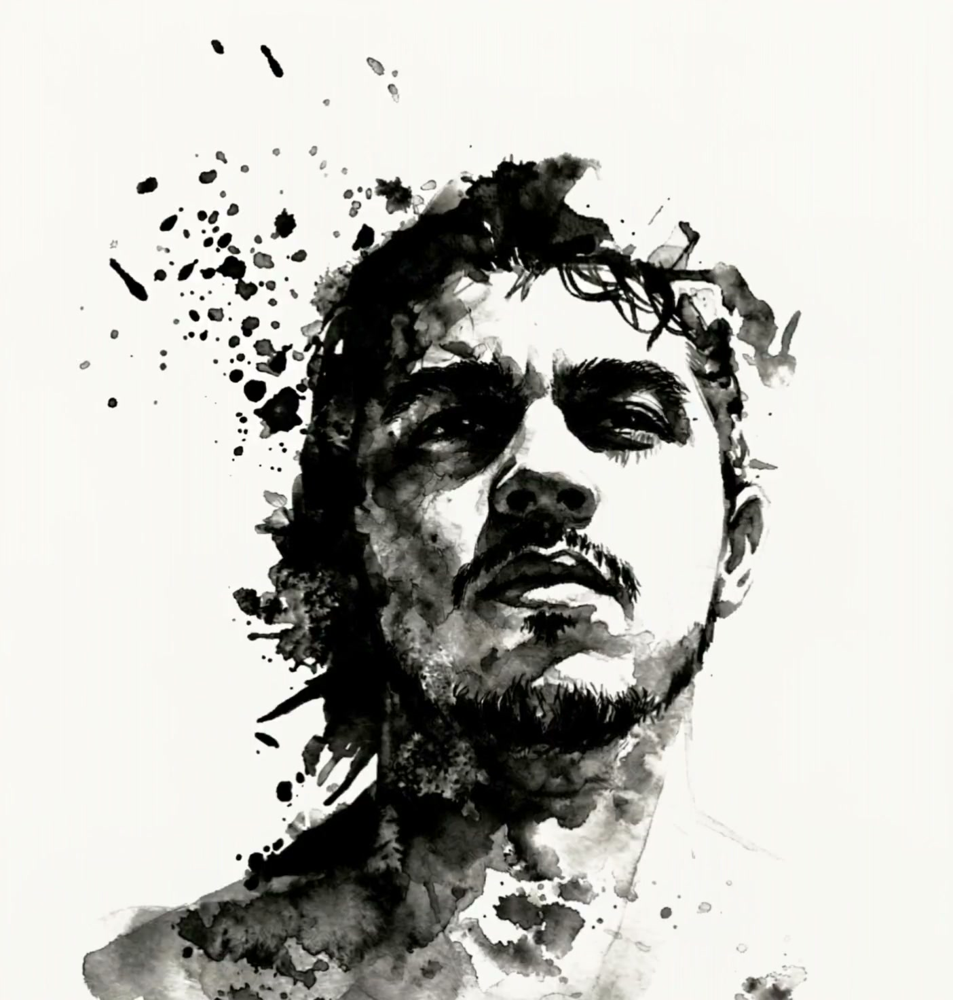

Scroll
Luan Rodrigues


Fotografo porque observar o mundo com atenção me faz entendê-lo melhor.
São Paulo, Brasil. A fotografia começou como um jeito de desacelerar — prestar atenção na luz, no enquadramento, no que normalmente passa despercebido.
Nas pessoas, busco o gesto natural — o sorriso que acontece sozinho, a expressão de quem está imerso no momento. Fotografo sem interromper, porque acredito que as melhores imagens nascem quando a pessoa simplesmente é quem é.
Meu trabalho transita entre paisagens, retratos e projetos autorais. Composição cuidadosa, interferência mínima.
Canon EOS M50 Mark II · Godox Flash